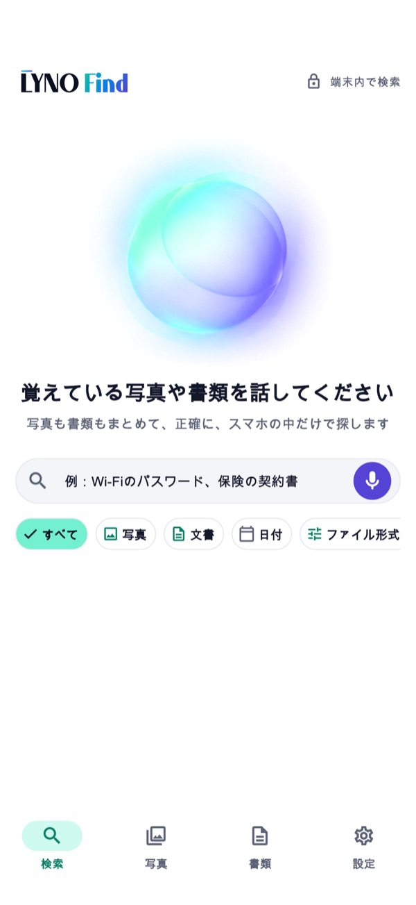

LYNO Find 100%活用ガイド
LYNO Find は、スマートフォンの中の写真と書類を言葉で探すアプリです。写真に写っているもの、写真の中の文字、書類の内容をまとめて探し、分析と検索はすべてスマートフォンの中だけで行います。アプリの活用ガイドと同じ順番で、実際の画面と一緒に説明します。

LYNO Find は、スマートフォンの中の写真と書類を言葉で探すアプリです。写真に写っているもの、写真の中の文字、書類の内容をまとめて探し、分析と検索はすべてスマートフォンの中だけで行います。アプリの活用ガイドと同じ順番で、実際の画面と一緒に説明します。
